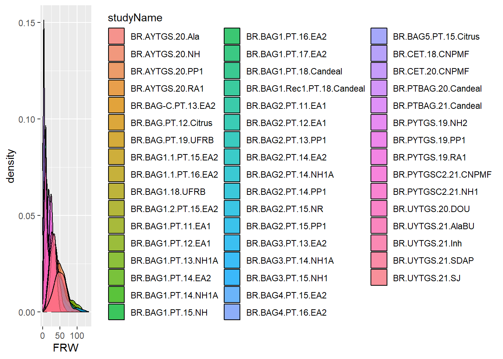
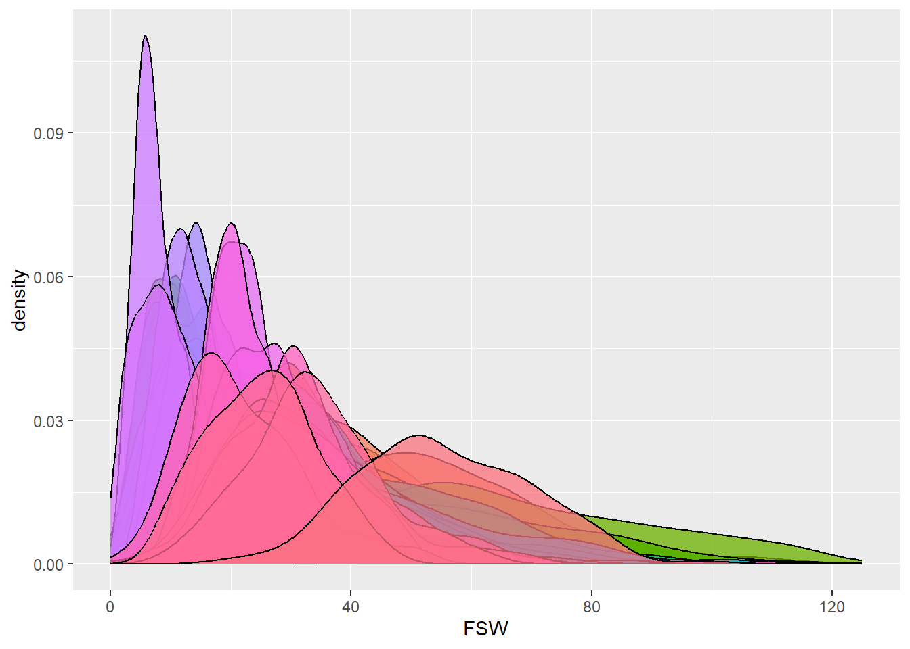
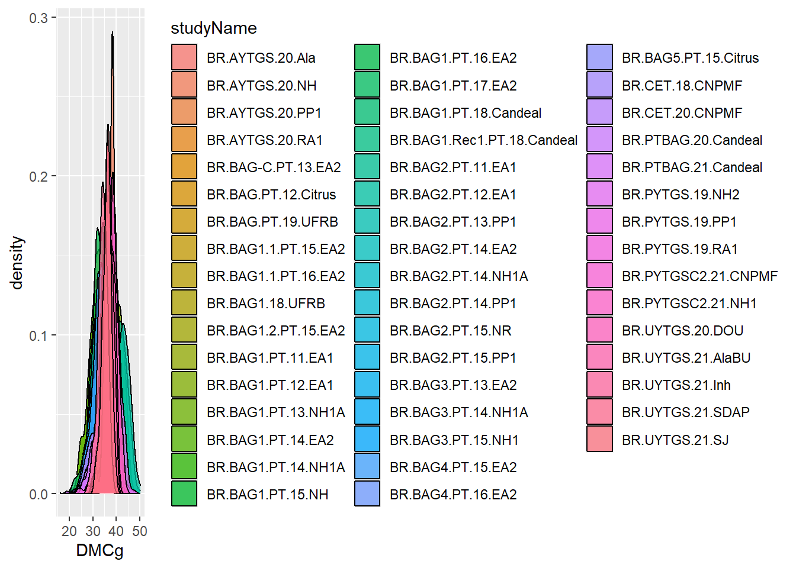
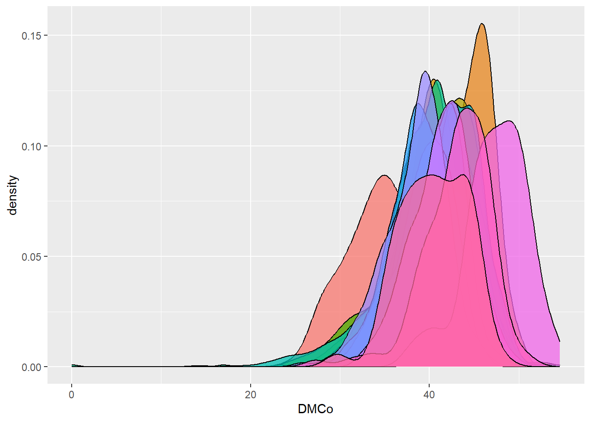
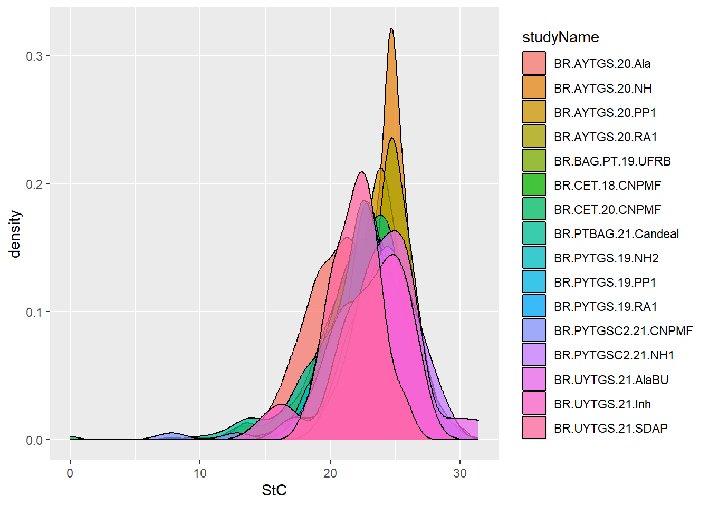
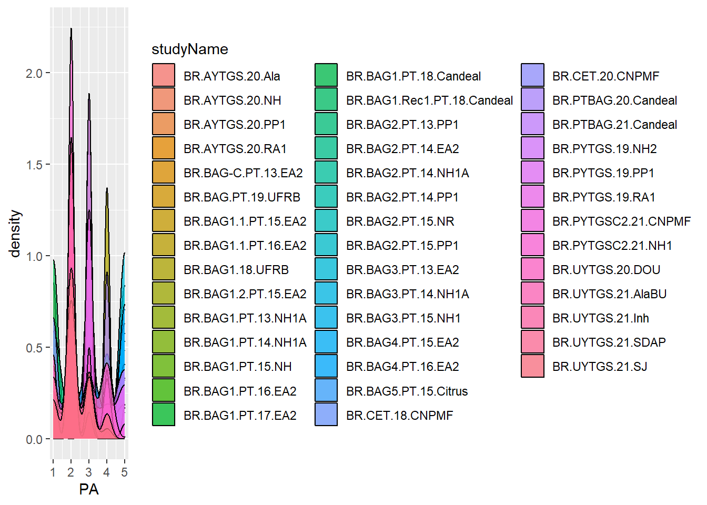

Last updated: 2025-10-04
Checks: 6 1
Knit directory: analisys-next-gen-2022/
This reproducible R Markdown analysis was created with workflowr (version 1.7.2). The Checks tab describes the reproducibility checks that were applied when the results were created. The Past versions tab lists the development history.
The R Markdown file has unstaged changes. To know which version of
the R Markdown file created these results, you’ll want to first commit
it to the Git repo. If you’re still working on the analysis, you can
ignore this warning. When you’re finished, you can run
wflow_publish to commit the R Markdown file and build the
HTML.
Great job! The global environment was empty. Objects defined in the global environment can affect the analysis in your R Markdown file in unknown ways. For reproduciblity it’s best to always run the code in an empty environment.
The command set.seed(20251003) was run prior to running
the code in the R Markdown file. Setting a seed ensures that any results
that rely on randomness, e.g. subsampling or permutations, are
reproducible.
Great job! Recording the operating system, R version, and package versions is critical for reproducibility.
Nice! There were no cached chunks for this analysis, so you can be confident that you successfully produced the results during this run.
Great job! Using relative paths to the files within your workflowr project makes it easier to run your code on other machines.
Great! You are using Git for version control. Tracking code development and connecting the code version to the results is critical for reproducibility.
The results in this page were generated with repository version 0f8461a. See the Past versions tab to see a history of the changes made to the R Markdown and HTML files.
Note that you need to be careful to ensure that all relevant files for
the analysis have been committed to Git prior to generating the results
(you can use wflow_publish or
wflow_git_commit). workflowr only checks the R Markdown
file, but you know if there are other scripts or data files that it
depends on. Below is the status of the Git repository when the results
were generated:
Ignored files:
Ignored: .Rproj.user/
Ignored: data/Arquivos Fieldbook 2022/BR.AYTInd.22.CMa_1.xls
Ignored: data/Arquivos Fieldbook 2022/BR.AYTInd.22.Candeal 8MP e 16cm_1.xls
Ignored: data/Arquivos Fieldbook 2022/BR.AYTInd.22.Estab_1.xls
Ignored: data/Arquivos Fieldbook 2022/BR.AYTInd.22.NH 16CM_1.xls
Ignored: data/Arquivos Fieldbook 2022/BR.AYTM.22.Candeal_1.xls
Ignored: data/Arquivos Fieldbook 2022/BR.AYTM.22.Estab_1.xls
Ignored: data/Arquivos Fieldbook 2022/BR.AYTM.22.NH1_1.xls
Ignored: data/Arquivos Fieldbook 2022/BR.AYTM.22.NH_1.xls
Ignored: data/Arquivos Fieldbook 2022/BR.AYTM.22.Pureza_1.xls
Ignored: data/Arquivos Fieldbook 2022/BR.AYTM.Candeal.22_1.xls
Ignored: data/Arquivos Fieldbook 2022/BR.CBGS-C4.22.CNPMF_1.xls
Ignored: data/Arquivos Fieldbook 2022/BR.CET.22.CNPMF.xls
Ignored: data/Arquivos Fieldbook 2022/BR.MULTGS-C3.22.Podium_1.xls
Ignored: data/Arquivos Fieldbook 2022/BR.MultGS.22.NH_1.xls
Ignored: data/Arquivos Fieldbook 2022/BR.PTBAG.22.Candeal Florescimento_1.xls
Ignored: data/Arquivos Fieldbook 2022/BR.PYT.22.Candeal_1.xls
Ignored: data/Arquivos Fieldbook 2022/BR.PYT.22.Jaguaripe_1.xls
Ignored: data/Arquivos Fieldbook 2022/BR.PYTO.22.Lon_1.xls
Ignored: data/Arquivos Fieldbook 2022/BR.UYT.22.Jagua_1.xls
Ignored: data/Arquivos Fieldbook 2022/BR.UYT.22.TRAC_1.xls
Ignored: data/Arquivos Fieldbook 2022/BR.UYT.WD.22.BJL_1.xls
Ignored: data/Arquivos Fieldbook 2022/BR.UYTGS.22.CMa_1.xls
Ignored: data/Arquivos Fieldbook 2022/BR.UYTGS.22.COMG_1.xls
Ignored: data/Arquivos Fieldbook 2022/BR.UYTGS.22.Candeal_1.xls
Ignored: data/Arquivos Fieldbook 2022/BR.UYTGS.22.CoC_1.xls
Ignored: data/Arquivos Fieldbook 2022/BR.UYTGS.22.CoH_1.xls
Ignored: data/Arquivos Fieldbook 2022/BR.UYTGS.22.ER_1.xls
Ignored: data/Arquivos Fieldbook 2022/BR.UYTGS.22.Esp_1.xls
Ignored: data/Arquivos Fieldbook 2022/BR.UYTGS.22.Estab_1.xls
Ignored: data/Arquivos Fieldbook 2022/BR.UYTGS.22.IFGua_1.xls
Ignored: data/Arquivos Fieldbook 2022/BR.UYTGS.22.ItiBA_1.xls
Ignored: data/Arquivos Fieldbook 2022/BR.UYTGS.22.LagDa_1.xls
Ignored: data/Arquivos Fieldbook 2022/BR.UYTGS.22.Mara_1.xls
Ignored: data/Arquivos Fieldbook 2022/BR.UYTGS.22.Mont_1.xls
Ignored: data/Arquivos Fieldbook 2022/BR.UYTGS.22.NH1_1.xls
Ignored: data/Arquivos Fieldbook 2022/BR.UYTGS.22.NH_1.xls
Ignored: data/Arquivos Fieldbook 2022/BR.UYTGS.22.PAMG_1.xls
Ignored: data/Arquivos Fieldbook 2022/BR.UYTGS.22.Quiss_1.xls
Ignored: data/Arquivos Fieldbook 2022/BR.UYTGS.22.SA_1.xls
Ignored: data/Arquivos Fieldbook 2022/BR.UYTGS.22.SDAP_1.xls
Ignored: data/Arquivos Fieldbook 2022/BR.UYTGS.22.TRAC_1.xls
Ignored: data/Arquivos Fieldbook 2022/BR.UYTGS.22.VC_1.xls
Ignored: data/phenotype.csv
Ignored: output/StudyTraits.tiff
Ignored: output/StudyYear.tiff
Untracked files:
Untracked: data/Dados_podridao_2018_2021.xlsx
Unstaged changes:
Modified: analysis/2_Phenotype_data.Rmd
Modified: analysis/3_Blups_cycles.Rmd
Note that any generated files, e.g. HTML, png, CSS, etc., are not included in this status report because it is ok for generated content to have uncommitted changes.
These are the previous versions of the repository in which changes were
made to the R Markdown (analysis/2_Phenotype_data.Rmd) and
HTML (docs/2_Phenotype_data.html) files. If you’ve
configured a remote Git repository (see ?wflow_git_remote),
click on the hyperlinks in the table below to view the files as they
were in that past version.
| File | Version | Author | Date | Message |
|---|---|---|---|---|
| Rmd | 0c01e7b | WevertonGomesCosta | 2025-10-04 | add phenotype_data script 2 rmd, html and site |
| html | 0c01e7b | WevertonGomesCosta | 2025-10-04 | add phenotype_data script 2 rmd, html and site |
| Rmd | 4edf925 | WevertonGomesCosta | 2025-10-04 | add scripts rmd |
This script prepares and cleans the phenotypic
dataset from the Embrapa Cassava Breeding Program, integrating
metadata from CassavaBase.
The main goals are:
- Define the C0 population (founders)
- Integrate phenotype and metadata files
- Assign clones to populations (C0, C1, C2)
- Check experimental design consistency (blocks, replicates, checks,
tests)
- Create nested design variables for downstream analyses
- Perform quality control (QC) on trait
distributions
- Save a cleaned dataset for further modeling (BLUPs, heritability,
selection indices)
library(gt) # Elegant tables
library(tidyverse) # Data wrangling and visualization
library(readxl) # Import Excel files
library(data.table) # Efficient data handling
library(genomicMateSelectR)# CassavaBase integrationComment:
These packages provide the backbone for data cleaning, visualization,
and integration with CassavaBase formats.
We define the C0 population by excluding specific
clones (checks, duplicates, uncertain IDs, blanks).
This ensures that only true founder clones are included.
exclud_c0 <-
c(
"BGM-0830-TVER",
"BGM-0611",
"BGM-06111",
"BGM-0022 T.Bco",
"BGM-0022 T.Rx",
"BGM-0113 RcxCr",
"BGM-0113 RcxRos",
"BGM-0115 TB",
"BGM-0115 TR",
"BGM-0150A",
"BGM-0152A",
"BGM-0152-B",
"BGM-0780(B)",
"BGM-0780(E)",
"BGM-0830",
"BGM-0830 TB",
"BGM-0856 CCr",
"BGM-0856 CRx",
"BGM-1176(M)",
"BGM-1262C",
"BGM-1262E",
"BGM-1502(M)",
"BGM-1722(D)",
"BGM-1759(B)",
"BGM-0150-B",
"BGM-0082",
"BGM-0165",
"BGM-0177",
"Manzhitil",
"BGM-0271",
"BGM-0276",
"BGM-0312",
"BGM-0365",
"BGM-0890",
"BGM-0927",
"BGM-0931",
"BGM-1186",
"BGM-1212",
"BGM-1218",
"BGM-1490",
"BGM-0053",
"BGM-0307",
"BGM-0669",
"BGM-1376",
"BGM-0082?",
"BGM-0271?",
"BGM-0276?",
"BGM-0290?",
"BGM-0365?",
"BGM-0655.1?",
"BGM-0737?",
"BGM-0869?",
"BGM-0895?",
"BGM-1028?",
"BGM-1212?",
"BGM-0043?",
"BGM-0144?",
"BGM-0165.1?",
"BGM-0165.2?",
"BGM-0182?",
"BGM-0187?",
"BGM-0533?",
"BGM-0713?",
"BGM-0890?",
"BGM-0931?",
"BGM-1218?",
"BGM-1359?",
"Manzhitil?",
"SE-9",
"SE-1",
"SE-2",
"SE-3",
"SE-8",
"BGM-0655.2?",
"BGM-0077?",
"BGM-0929?",
"BGM-1025?",
"BGM-1360?",
"BGM-1511?",
"BLANK__G12"
)
`%!in%` <- negate(`%in%`)
C0 <- read_delim("data/TP-BR-18-EMBRAPA-Nextgen.csv",
delim = ";", escape_double = FALSE, trim_ws = TRUE) %>%
filter(tissue_id %!in% exclud_c0)Interpretation:
The C0 population represents the genetic base of the
program. Removing uncertain or duplicated IDs avoids noise in downstream
analyses.
We integrate phenotype and metadata files from CassavaBase.
Traits are renamed to short, intuitive codes (e.g., FRW = Fresh Root
Weight).
dbdata <- readDBdata(
phenotypeFile = here::here("data", "phenotype (1).csv"),
metadataFile = here::here("data", "metadata (1).csv")
) %>%
dplyr::rename(
FSW = fresh.shoot.weight.measurement.in.kg.per.plot.CO_334.0000016,
FRW = fresh.storage.root.weight.per.plot.CO_334.0000012,
DMCg = dry.matter.content.by.specific.gravity.method.CO_334.0000160,
DMCo = dry.matter.content.percentage.CO_334.0000092,
NOHAV = plant.stands.harvested.counting.CO_334.0000010,
StC = starch.content.percentage.CO_334.0000071,
PA = plant.architecture.visual.rating.1.5.CO_334.0000099,
DRY = dry.yield.CO_334.0000014
) %>%
mutate(
Pop = case_when(
germplasmName %like% "BR-20GS-" | germplasmSynonyms %like% "BR-20GS-" |
germplasmName %like% "BR-19GS-" | germplasmSynonyms %like% "BR-19GS-" ~ "C2",
germplasmName %like% "BR-18GS-" | germplasmSynonyms %like% "BR-18GS-" ~ "C1",
germplasmName %in% C0$tissue_id | germplasmSynonyms %in% C0$tissue_id ~ "C0"
)
) %>%
mutate_if(is.character, as.factor) %>%
select(-numberBlocks, -numberReps)Interpretation:
- C0 = founders
- C1 = first genomic selection cycle (2018)
- C2 = second genomic selection cycle (2019–2020)
This classification allows us to track genetic gain across cycles.
clone_pop <- dbdata %>% group_by(Pop, germplasmName) %>% tally()
clone_pop %>% group_by(Pop) %>% tally()# A tibble: 4 × 2
Pop n
<fct> <int>
1 C0 852
2 C1 739
3 C2 472
4 <NA> 1340Interpretation:
This step confirms the number of clones per population (C0, C1, C2). It
ensures that population assignment was successful.
We count the number of blocks and replicates per trial.
numberBlocks <- dbdata %>% group_by(studyName, blockNumber) %>% tally() %>% tally()
numberReps <- dbdata %>% group_by(studyName, replicate) %>% tally() %>% tally()Interpretation:
This verifies whether trials follow complete block
designs or incomplete block designs.
We also remove a problematic trial:
dbdata <- dbdata %>% filter(studyName != "BR.PTBAGRec.19.Candeal") %>% droplevels()We check if replicate corresponds to complete blocks and
blockNumber to sub-blocks.
dbdata %>%
group_by(studyName) %>%
dplyr::summarize(N_replicate = n_distinct(replicate),
N_blockNumber = n_distinct(blockNumber),
doRepsEqualBlocks = all(replicate == blockNumber))# A tibble: 49 × 4
studyName N_replicate N_blockNumber doRepsEqualBlocks
<fct> <int> <int> <lgl>
1 BR.AYTGS.20.Ala 3 3 TRUE
2 BR.AYTGS.20.NH 1 3 FALSE
3 BR.AYTGS.20.PP1 3 3 TRUE
4 BR.AYTGS.20.RA1 3 3 TRUE
5 BR.BAG-C.PT.13.EA2 2 2 TRUE
6 BR.BAG.PT.12.Citrus 11 11 TRUE
7 BR.BAG.PT.19.UFRB 1 15 FALSE
8 BR.BAG1.1.PT.15.EA2 10 10 TRUE
9 BR.BAG1.1.PT.16.EA2 10 10 TRUE
10 BR.BAG1.18.UFRB 1 22 FALSE
# ℹ 39 more rowsInterpretation:
- If replicate == blockNumber, the design is simple
(complete blocks).
- If not, the design includes incomplete blocks or nested
structures.
We create explicit identifiers for hierarchical design:
dbdata %<>%
mutate(
yearInLoc = paste0(programName, "_", locationName, "_", studyYear),
trialInLocYr = paste0(yearInLoc, "_", studyName),
repInTrial = paste0(trialInLocYr, "_", replicate),
blockInTrial = paste0(trialInLocYr, "_", blockNumber)
)Interpretation:
These variables are essential for mixed models (BLUPs),
ensuring correct nesting of random effects.
We visualize trait distributions by trial to detect outliers or inconsistencies.
dbdata %>% ggplot(aes(x = FRW, fill = studyName)) + geom_density(alpha = 0.75, show.legend = FALSE)
| Version | Author | Date |
|---|---|---|
| 0c01e7b | WevertonGomesCosta | 2025-10-04 |
dbdata %>% ggplot(aes(x = FSW, fill = studyName)) + geom_density(alpha = 0.75, show.legend = FALSE)
| Version | Author | Date |
|---|---|---|
| 0c01e7b | WevertonGomesCosta | 2025-10-04 |
dbdata %>% ggplot(aes(x = DMCg, fill = studyName)) + geom_density(alpha = 0.75, show.legend = FALSE)
| Version | Author | Date |
|---|---|---|
| 0c01e7b | WevertonGomesCosta | 2025-10-04 |
dbdata %>% ggplot(aes(x = DMCo, fill = studyName)) + geom_density(alpha = 0.75, show.legend = FALSE)
| Version | Author | Date |
|---|---|---|
| 0c01e7b | WevertonGomesCosta | 2025-10-04 |
dbdata %>% ggplot(aes(x = StC, fill = studyName)) + geom_density(alpha = 0.75, show.legend = FALSE)
| Version | Author | Date |
|---|---|---|
| 0c01e7b | WevertonGomesCosta | 2025-10-04 |
dbdata %>% ggplot(aes(x = PA, fill = studyName)) + geom_density(alpha = 0.75, show.legend = FALSE)
| Version | Author | Date |
|---|---|---|
| 0c01e7b | WevertonGomesCosta | 2025-10-04 |
Interpretation:
Density plots allow us to quickly spot trials with abnormal
distributions, which may indicate data entry errors or
environmental effects.
saveRDS(dbdata, file = here::here("data","phenotypes_cleaned.rds"))Interpretation:
The cleaned dataset is saved for downstream analyses (heritability,
BLUPs, selection indices). This ensures reproducibility and avoids
repeating preprocessing steps.
✅ Resumo das melhorias:
- Comentários mais claros sobre cada etapa.
- Interpretações biológicas/experimentais ligadas ao programa de
melhoramento.
- Estrutura narrativa que guia o leitor como um tutorial.
sessionInfo()R version 4.5.1 (2025-06-13 ucrt)
Platform: x86_64-w64-mingw32/x64
Running under: Windows 11 x64 (build 26100)
Matrix products: default
LAPACK version 3.12.1
locale:
[1] LC_COLLATE=Portuguese_Brazil.utf8 LC_CTYPE=Portuguese_Brazil.utf8
[3] LC_MONETARY=Portuguese_Brazil.utf8 LC_NUMERIC=C
[5] LC_TIME=Portuguese_Brazil.utf8
time zone: America/Sao_Paulo
tzcode source: internal
attached base packages:
[1] stats graphics grDevices utils datasets methods base
other attached packages:
[1] genomicMateSelectR_0.2.0 data.table_1.17.8 readxl_1.4.5
[4] lubridate_1.9.4 forcats_1.0.0 stringr_1.5.2
[7] dplyr_1.1.4 purrr_1.1.0 readr_2.1.5
[10] tidyr_1.3.1 tibble_3.3.0 ggplot2_4.0.0
[13] tidyverse_2.0.0 gt_1.1.0
loaded via a namespace (and not attached):
[1] utf8_1.2.6 sass_0.4.10 generics_0.1.4 xml2_1.4.0
[5] stringi_1.8.7 hms_1.1.3 digest_0.6.37 magrittr_2.0.4
[9] timechange_0.3.0 evaluate_1.0.5 grid_4.5.1 RColorBrewer_1.1-3
[13] fastmap_1.2.0 cellranger_1.1.0 rprojroot_2.1.1 workflowr_1.7.2
[17] jsonlite_2.0.0 whisker_0.4.1 promises_1.3.3 scales_1.4.0
[21] jquerylib_0.1.4 cli_3.6.5 crayon_1.5.3 rlang_1.1.6
[25] bit64_4.6.0-1 withr_3.0.2 cachem_1.1.0 yaml_2.3.10
[29] parallel_4.5.1 tools_4.5.1 tzdb_0.5.0 httpuv_1.6.16
[33] here_1.0.2 vctrs_0.6.5 R6_2.6.1 lifecycle_1.0.4
[37] git2r_0.36.2 bit_4.6.0 fs_1.6.6 vroom_1.6.5
[41] pkgconfig_2.0.3 pillar_1.11.1 bslib_0.9.0 later_1.4.4
[45] gtable_0.3.6 glue_1.8.0 Rcpp_1.1.0 xfun_0.53
[49] tidyselect_1.2.1 rstudioapi_0.17.1 knitr_1.50 farver_2.1.2
[53] htmltools_0.5.8.1 labeling_0.4.3 rmarkdown_2.29 compiler_4.5.1
[57] S7_0.2.0 Weverton Gomes da Costa, Pós-Doutorando, Embrapa Mandioca e Fruticultura, wevertonufv@gmail.com↩︎